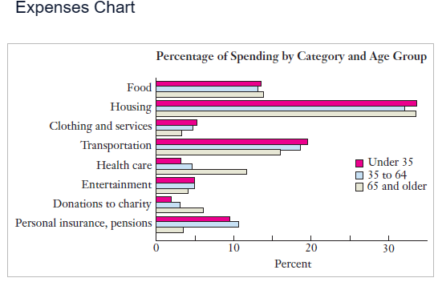
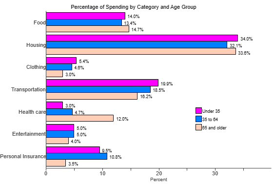

Formulas Used: Mathematics of Finance NOTE: Unless instructed otherwise;
For all financial calculations, do not round until the final answer.
Do not round intermediate calculations. If it is too long, write it to "at least" $5$ decimal places.
Round your final answer to $2$ decimal places.
Make sure you include the unit.
Notable Notes Regarding Finance Literacy
(1.) It is important to understand your personal finances because you need to know how much money you have and
how much money you spend in order to find a way to live within your means.
(2.) Four crucial things you should do if you want to keep your finances under control are:
(a.) Know your bank balance: Avoid bouncing a check or having your debit card rejected.
(b.) Know what you spend: Keep track of your debit and credit card spending.
(c.) Do not buy on impulse: Think first; then buy only if you are sure the purchase makes sense for you.
(d.) Make a budget: Do not overspend.
(3.) A budget keeps track of how much money one has coming in and how much one has going out and helps to
determine what adjustments need to be made.
The four-step process of figuring out your monthly budget are:
(a.) List all monthly income.
(b.) List all monthly expenses.
(c.) Subtract total expenses from total income to determine net monthly cash flow.
(d.) Make adjustments as needed.
(4.) Costs of Insurance Policies
(a.) A premium is the amount you pay to purchase the policy.
(b.) A deductible is the amount you are responsible to cover before the insurance company pays anything.
(c.) A copayment is the amount you pay each time you use a particular service. This typically applies to
health insurance.
(5.) Some factors to consider when evaluating the benefits of an insurance policy are:
(a.) What are the policy's maximum benefits?
(b.) What exceptions lead to a lack of coverage?
(c.) What is the potential cost if you do not purchase coverage?
Solve all questions.
Show all work.
Interpret your solutions.
For ACT Students
The ACT is a timed exam...60 questions for 60 minutes
This implies that you have to solve each question in one minute.
Some questions will typically take less than a minute a solve.
Some questions will typically take more than a minute to solve.
The goal is to maximize your time. You use the time saved on those questions you
solved in less than a minute, to solve the questions that will take more than a minute.
So, you should try to solve each question correctly and timely.
So, it is not just solving a question correctly, but solving it correctly on time.
Please ensure you attempt all ACT questions.
There is no negative penalty for any wrong answer.
For JAMB and CMAT Students
Calculators are not allowed. So, the questions are solved in a way that does not require a calculator.
For NSC Students For the Questions:
Any space included in a number indicates a comma used to separate digits...separating multiples of three digits
from
behind.
Any comma included in a number indicates a decimal point. For the Solutions:
Decimals are used appropriately rather than commas
Commas are used to separate digits appropriately.
(1.) Carlo bought a new plasma TV for $1900.
He made a down payment of $400 and then financed the balance through the store.
Unfortunately, he was unable to make the first monthly payment and now pays 7% interest per month on the
balance while he watches his TV.
What is Carlo's monthly interest payment?
(2.) Suppose Boaz has a health insurance policy with an annual premium of $4800, an annual
deductible of $1000, and copayments of $25
for visits to the doctor's offices.
He goes through the year with no medical bills at all.
What is his total cost for the year?
The total cost for the year is $4800 because he went through the year with no medical
bills.
(3.) ACT Marietta purchased a car that had a purchase price of $10,400, which
included all other
costs and tax.
She paid $2,000 as a down payment and got a loan for the rest of the purchase price.
Marietta paid off the loan by making 48 payments of $225 each.
The total of all her payments, including the down payment, was how much more than the car's purchase
price?
Total of all payments she made = $\$2000 + \$10,800 = \$12,800$
This is the question:
$\$12,800$ is how much more than $\$10,400$
$12,800 - 10,400 = 2,400$
The total payments made by Marietta is $\$2,400$ more than the car's purchase price.
$
(4.) Find the monthly interest payment in the situations described below.
Assume that the monthly interest rate is one-twelfth of the annual interest rate.
(a.) Veronica owes a clothing store $1700, but until she makes a payment, she pays 2%
interest per month.
What is Veronica's monthly interest payment?
(b.) Jacob maintains an average balance of $1050 on his credit card, which carries a 12%
annual interest rate.
How much is his monthly interest payment?
(5.) Prorate the following expenses and find the corresponding monthly expense.
(Round to the nearest cent as needed)
(a.) Sarah pays $4100 for tuition and fees for each of the two semesters, plus an
additional $210 for textbooks each semester.
(b.) During one year, Paul takes 15 credit hours for each of three quarters.
Tuition and fees amount to $615 per credit-hour.
Textbooks average $310 per quarter.
(c.) Jonathan pays a semiannual premium of $600 for automobile insurance, a monthly premium
of $125 for health insurance, and an annual premium of
$300 for life insurance.
(d.) Judith pays $595 per month in rent, a semiannual car insurance premium of
$450, and an annual health club membership fee of $450.
(e.) In filing his income tax, Lot reported annual contributions of $550 to a public radio
station, $245 to a public TV station, $150
to a local food bank, and $283 to other charitable organizations.
(f.) Benedicta spends an average of $34 per week on gasoline and $39 every
three months on a daily newspaper.
(a.) 1st semester
Tuition: $4100
Textbooks: $210
2nd semester
Tuition: $4100
Textbooks: $210
Total = 4100(2) + 210(2)
= 8200 + 420
= 8620 per year
$
Monthly\;\;expense = \dfrac{8620}{12} \\[5ex]
= 718.3333333 \\[3ex]
\approx \$718.33 \\[3ex]
$
(b.) Three quarters
Tuition and Fees: 615(15)(3) = 27675
Textbooks costs: 310(3) = 930
Total = 27675 + 930 = $28605 per year
$
Monthly\;\;expense = \dfrac{28605}{12} \\[5ex]
= \$2383.75 \\[3ex]
$
(c.) Semiannual premium of $600 for automobile insurance = 2(600) per year = 1200 per
year = $\dfrac{1200}{12} = \$100$ per month
Annual premium of $300 for life insurance = 300 per year = $\dfrac{300}{12} = \$25$ per
month
Monthly premium of $125 for health insurance
Monthly expense = 100 + 25 + 125 = $250
(d.) Monthly rent = $595
Semiannual car insurance premium of $450 = 2(450) per year = 900 per year =
$\dfrac{900}{12} = \$75$ per month
Annual health club membership fee of $450 = $\dfrac{450}{12} = \$37.5$ per month
Monthly expense = 595 + 75 + 37.5 = $707.50
(e.) Annual contributions: $550 = $\dfrac{550}{12} = \$45.83333333$ per month
$245 = $\dfrac{245}{12} = \$20.41666667$ per month
$150 = $\dfrac{150}{12} = \$12.5$ per month
$245 = $\dfrac{283}{12} = \$23.58333333$ per month
(f.) $34 per week on gasoline = 52(34) per year = $1768 per year =
$\dfrac{1768}{12} = \$147.3333333$ per month $39 every three months on a daily newspaper = $\dfrac{39}{3} = \$13$ per month
Monthly expense = 147.3333333 + 13 = $160.3333333
(6.) ACT Karen invested $2,000 in a special savings account.
The balance of this special savings account will double every 5 years.
Assuming that Karen makes no other deposits and no withdrawals, what will be the balance of Karen's
investment at the end
of 40 years?
(7.) Determine the net monthly cash flow for the income-expense sheet.
Assume salaries and wages are after taxes.
Assume 4 weeks = 1 month.
Income
Expenses
Part-time job: $500/month
College fund from grandparents: $350/month
Scholarship: $6000/year
Rent: $550/month
Groceries: $70/week
Tuition and fees: $3600 twice a year
Incidentals: $110/week
Income
Part-time job: $500/month
College fund from grandparents: $350/month
Scholarship: $6000/year = $\dfrac{6000}{12}$ per month = $500/month
Total monthly income = 500 + 350 + 500 = $1350
Expenses
Rent: $550/month
Groceries: $70/week = 70(4) = $280/month
Tuition and fees: $3600 twice a year = $3600 every six months =
$\dfrac{3600}{6}$ per month = $600/month
Incidentals: $110/week = 110(4) = $440/month
Total monthly expenses = 550 + 280 + 600 + 440 = $1870
Net monthly cash flow = Monthly income − Monthly expenses
= 1350 − 1870
= −$520.00
(8.) The impact of the recession of 2009 was widely felt across America.
One response that continues well into 2013 is an effort to build local economies by thinking and
spending locally.
This decry has been heard in both large cities and small towns and has colored the shopping habits of a
growing number of individuals even as some relief from the recession is felt.
The results can be noteworthy.
A national newspaper reported that if residents of New Orleans were to reallocate 10% of their spending
to locally owned businesses and services, more than $200 million would be remain in the
local economy.
To meaningfully build local economies for the long haul, consumers as well as business owners must take
the next step and produce more of what the community has imported over the years.
(Source: Christian Science Monitor, volume 101)
Which of the following would not be an example of thinking and spending locally? A. Holiday shopping at a craft fair featuring community vendors. B. Using locally grown ingredients in country restaurants. C. Selling jams made from area berry farms to surrounding communities. D. Contracting with a nationally known music group to provide entertainment for a town's
centennial celebration.
D. Contracting with a nationally known music group to provide entertainment for a town's
centennial celebration.
(9.) Choose the best answer to the following question.
For the average person, what is the single biggest category of expense?

A. The single biggest category is housing.
The average person uses 33% of his or her income on housing.
B. The single biggest category is food.
The average person uses 23%-43% of his or her income on food.
C. The single biggest category is food.
The average person uses 46%-66% of his or her income on food.
D. The single biggest category is entertainment.
The average person has not yet considered finding lower-cost entertainment options.
E. The single biggest category is housing.
The average person uses 23% of his or her income on housing.
F. The single biggest category is entertainment.
The average person spends 8% of his or her income on entertainment.
A. The single biggest category is housing.
The average person uses 33% of his or her income on housing.
(10.) Choose the best answer to the following question.
What will evaluating your monthly budget help you learn?
A. You learn how to keep your personal spending under control.
You could be spending a lot more in certain categories than you had imagined and that the items you
thought were causing the biggest difficulties are small compared to other items.
B. You learn how to earn more money.
You may figure out that you are good at managing finances, and then become a wealthy financial advisor.
C. You learn how to make better investments.
You may notice that you are spending a higher percentage of your money on entertainment than the average
person.
D. You learn how to make better investments.
You may notice that you made a poor investment that is causing you to lose money every month.
E. You learn how to earn more money.
You may realize that you should start working more hours every week to increase your monthly cash flow.
F. You learn how to keep your personal spending under control.
Once you evaluate your current budget, you'll almost certainly want to make changes to improve your
cash flow.
A. You learn how to keep your personal spending under control.
You could be spending a lot more in certain categories than you had imagined and that the items you
thought were causing the biggest difficulties are small compared to other items.
(11.) Decide whether these statements make sense (or is clearly true) or does not make sense (or is
clearly false).
Explain your reasoning.
(I.) My vacation travel cost a total of $1440, which Person A entered into his monthly
budget as $120 per month.
(II.) Brandon discovered that his daily routine of buying a slice of pizza and a soda at lunch was
costing him more than $19,000 per year.
(III.) When Person A figured out his monthly budget, Person A included only his rent and his spending
on gasoline, because nothing else could possibly add up to much.
(IV.) Two good friends do everything together, spending the same amount on eating out, entertainment,
and other leisure activities.
Therefore, they have the same monthly cash flow.
(V.) Person's A monthly cash flow was −$184, which explained why his credit card
debt kept rising.
(VI.) Person A bought the cheapest health insurance Person A could find, because that's sure to be the
best option for my long-term financial success.
(I.) The statement makes sense because when making a monthly budget, a prorated amount for expenses
that don not recur monthly, such as vacations should be included.
(II.) The statement does not make sense because this would mean that a slice of pizza and a soda
costs him about $52 (19000 ÷ 365 ≈ 52.05479452) a day.
(III.) The statement does not make sense because everything she buys during the month will affect
her monthly costs and overall cash flow.
(IV.) The statement does not make sense because even though two friends spend the same amount on
entertainment expenses, they may spend different amounts on other expenses.
(V.) The statement makes sense because a cash flow of −$184 means that if he
doesn't have any money saved, then any money he spends must be borrowed from a credit card.
(VI.) The statement does not make sense because the cheapest health insurance plans do not cover as
much as the more expensive insurance plans.
If he gets sick, he might end up paying more money than he would if he had a more expensive plan.
(12.) Choose the best answer to the following question.
Which of the following is necessary if you want to make monthly contributions to savings?
A. You must not owe money on any loans.
This means that you are not spending any money toward interest. If you are not paying interest, you
have money to save.
B. You must have a positive monthly cash flow.
If you have a positive monthly cash flow, you can pay more towards your credit card balance. Once the
balance is zero, you should start putting that extra money in the bank.
C. You must be spending less than 20% of your income on food and clothing.
As long as you don't increase your spending in any other category, you should be able to find money to
save.
D. You must have a positive monthly cash flow.
If your cash flow is positive, you will have money left over at the end of each month, which you can
use for savings.
E. You must not owe money on any loans.
If you do not owe any money on loans, you will have money left over at the end of each month, which
you can use for savings.
F. You must be spending less than 20% of your income on food and clothing.
Spending less on food and clothing will increase cash flow exponentially every month.
D. You must have a positive monthly cash flow.
If your cash flow is positive, you will have money left over at the end of each month, which you
can use for savings.
(13.) ACT Diego purchased a car that had a purchase price of $13,400 which included
all other
costs and tax.
He paid $400 as a down payment and got a loan for the rest of the purchase price.
Diego paid off the loan by making 48 payments of $300 each.
The total of all his payments, including the down payment, was how much more than the car's purchase
price?
Total of all payments he made = $\$400 + \$14,400 = \$14,800$
This is the question:
$\$14,800$ is how much more than $\$13,400$
$14,800 - 13,400 = 1,400$
The total payments made by Diego is $\$1,400$ more than the car's purchase price.
(14.) Choose the best answer to the following question.
What does a negative monthly cash flow mean?
A. It means your investments are losing value.
Each month you lose a percentage of the money that you invested, which is the reason for the negative
cash flow.
B. It means you are taking in more money than you are spending.
When you subtract your total expenses from your total income, the difference is negative.
C. It means you are spending more money than you are taking in.
When you subtract your total expenses from your total income, the difference is negative.
D. It means your investments are losing value.
When the interest rates decrease, your cash flow becomes negative.
E. It means you are spending more money than you are taking in.
When you subtract your total expenses from your total income, the difference is positive.
F. It means you are taking in more money than you are spending.
When you subtract your total expenses from your total income, the difference is positive.
C. It means you are spending more money than you are taking in.
When you subtract your total expenses from your total income, the difference is negative.
(15.) Determine the net monthly cash flow for the income-expense sheet.
Assume salaries and wages are after taxes.
Assume 4 weeks = 1 month.
Net monthly cash flow = Monthly income − Monthly expenses
= 2458.333333 − 1648.333333
= $810.00
(16.)
(17.) The figure summarizes the average spending patterns for people of different ages in a certain
nation.
Determine whether the spending pattern given below is equal to, above, or below the national average.
Assume that salaries and wages are after taxes.

A single 30-year-old woman with a monthly salary of $4500 spends $1530 per
month on rent.
National Average
We do not see Rent in the chart.
However, we see Housing
Rent is the same as Housing
30 years implies under 35
% spent on Housing = 34.0% = $\dfrac{34}{100}$ = 0.34
Amount spent on Housing = 0.34 × 4500 = $1530
The spending pattern is equal to the national average.
(18.)
(19.)
(20.) ACT Ricardo started a savings account for his daughter Ruth by depositing $500
into the
account for her 1st birthday.
For each successive birthday, Ricardo deposits $200 more than the amount deposited for the
previous
birthday.
This is the only money deposited into the account.
What is the total amount of money Ricardo will have deposited into the account for Ruth up to and
including her
6th birthday?
Net monthly cash flow = Monthly income − Monthly expenses
= 1900 − 2213.333333
= −313.3333333
≈ −$313.33
(22.) Choose the best answer to these questions.
(I.) Why is it so important to understand your personal finances?
A. It is important to understand your personal finances because understanding your personal
finances will prevent divorce and other difficulties in personal relationships.
B. It is important to understand your personal finances because there will be an exam at the end
of the term.
C. It is important to understand your personal finances because you need to know how much money
you have and how much money you spend in order to find a way to live within your means.
D. It is important to understand your personal finances because you need to know what your credit
card interest is so that you can pay the balance off quicker.
Once the balance is paid off, you can then invest in the stock market.
(II.) What types of problems are more common among people who do not have their finances under control?
A. People who do not have their finances under control suffer from financial stress, and have
less friends.
They also suffer from higher interest rates.
B. People who do not have their finances under control suffer from financial stress because they
usually have to pay an accountant to balance their checkbooks.
C. People who do not have their finances under control have higher marriage rates, and no
difficulty in personal relationships.
However, they tend to suffer from higher rates of depression among a variety of other ailments.
D. People who do not have their finances under control suffer from financial stress, higher
divorce rates, and other difficulties in personal relationships.
They also suffer from higher rates of depression among a variety of other ailments.
(I.) C. It is important to understand your personal finances because you need to know how
much money you have and how much money you spend in order to find a way to live within your means.
(II.) D. People who do not have their finances under control suffer from financial stress,
higher divorce rates, and other difficulties in personal relationships.
They also suffer from higher rates of depression among a variety of other ailments.
(23.)
(24.) ACT Ming purchased a car that had a purchase price of $5,400, which included
all other
costs and tax.
She paid $1,000 as a down payment and got a loan for the rest of the purchase price.
Ming paid off the loan by making 28 payments of $200 each.
The total of all her payments, including the down payment, was how much more than the car's purchase
price?
Total of all payments she made = $\$1000 + \$5,600 = \$6,600$
This is the question:
$\$6,600$ is how much more than $\$5,400$
$6,600 - 5,400 = 1,200$
The total payments made by Ming is $\$1,200$ more than the car's purchase price.
(25.)
(26.) Choose the best answer to these questions.
(I.) Summarize how average spending patterns change with age.
A. As people get older, they tend to spend more on transportation and housing than younger
people.
They also tend to spend less on health care.
B. As people get older, they tend to spend more on health care and donations to charity than
younger people.
They also tend to spend less on personal insurance, pensions, clothing, and services than younger
people.
C. As people get older, they tend to spend more on food and entertainment than younger people.
They also tend to spend less on housing than younger people.
D. As people get older, they tend to spend more on clothing and services than younger people.
They also tend to spend less on food and housing than younger people.
(II.) How can comparing your own spending to average spending patterns help you evaluate your budget?
A. If you are spending a higher percentage of your money on entertainment than the average
person, you might be able to find cheaper ticket prices if you ask around.
B. If you are spending a higher percentage of your money on an item in your budget than the
average person, you might want to consider finding lower-cost options or adjusting your budget.
C. It is a good idea to check how you compare to the rest of the population.
If you find that people spend more than you on gas, you can give others advice on how to spend less.
D. It can be useful to check how you compare to the rest of the population.
If you notice that most people donate less than you do to charity, it might be time to stop giving away
so much.
(I.) B. As people get older, they tend to spend more on health care and donations to charity
than younger people.
They also tend to spend less on personal insurance, pensions, clothing, and services than younger
people.
(II.) B. If you are spending a higher percentage of your money on an item in your budget than
the average person, you might want to consider finding lower-cost options or adjusting your
budget.
(27.)
(28.) Choose the best answer to these questions.
(I.) What terms should you include when calculating how much it costs you to attend college?
A. Extracurricular fees, auto insurance, size of classes, and majors offered B. Insurance, deductibles, premiums, and co-payments C. Dining hall food, size of dorm room, parking, and activities D. Tuition, student fees, cost of textbooks, rent, and scholarships
(II.) How can you decide whether this is a worthwhile expense?
A. Whether this expense is worthwhile is subjective.
However, the average high school graduate will earn more over a career than the average college
graduate.
B. Whether this expense is worthwhile is subjective.
However, the average college graduate does not earn more over a career than the average high school
graduate.
C. Whether this expense is worthwhile is subjective.
However, the average college graduate earns about $1.2 million more over a career than the
average high school graduate.
D. This expense is not worthwhile.
(I.) D. Tuition, student fees, cost of textbooks, rent, and scholarships
(II.) C. Whether this expense is worthwhile is subjective.
However, the average college graduate earns about $1.2 million more over a career than
the average high school graduate.
(29.) Determine the net monthly cash flow for the income-expense sheet.
Assume salaries and wages are after taxes.
Assume 4 weeks = 1 month.
Income
Expenses
Salary: $26,500/year
Pottery Sales: $150/month
House payments: $1070/month
Groceries: $100/week
Household expenses: $120/month
Health payments: $440/month
Car insurance: $540 twice a year
Savings plan: $35/month
Donations: $640/year
Miscellaneous: $470/month
Income
Salary: $26500/year = $\dfrac{26500}{12}$ per month = $2208.333333/month
Pottery Sales: $150/month
Total monthly income = 2208.333333 + 150 = $2358.333333
Expenses
House payments: $1070/month
Groceries: $100/week = 100(4) = $400/month
Household expenses: $120/month
Health payments: $440/month
Car insurance: $540 twice a year = $540 every six months =
$\dfrac{540}{6}$ per month = $90/month
Savings plan: $35/month
Donations: $640/year = $\dfrac{640}{12}$ per month = $53.33333333/month
Miscellaneous: $470/month
Total monthly expenses = 1070 + 400 + 120 + 440 + 90 + 35 + 53.33333333 + 470 =
$2678.333333
Net monthly cash flow = Monthly income − Monthly expenses
= 2358.333333 − 2678.333333
= −320.0000003
≈ −$320.00
(30.)
(31.) Consider the following situation, which involves two options.
(I.) Determine which option is less expensive.
You currently drive 300 miles per week in a car that gets 13 miles per gallon of gas.
You are considering buying a new fuel-efficient car for $17,000 (after trade-in on your
current car) that gets 55 miles per gallon.
Insurance premiums for the new and old car are $900 and $400 per year,
respectively.
You anticipate spending $1400 per year on repairs for the old car and having no repairs on the
new car.
Assume gas costs $4.00 per gallon.
Over a five-year period, is it less expensive to keep your old car or buy the new car?
(II.) Are there unstated factors that might affect your decision?
Over a five-year period, the cost of the old car is $33000 and the cost of the new car is
$22500.
Thus, over a five-year period, it is less expensive to buy the new car.
(II.) The unstated factors that might affect your decision are:
Interest and number of years on any loans taken out to buy the new car
Time value of money
Inflation
Depreciation or future resale value for each car
Government incentives to purchase a new fule efficient car
Any payments for purchasing the old car and number of remaining payments